Christian Alex
UX/UI Designer
Este projeto trata-se de produto digital que serve como central para ONG's de adoção de animais, possibilitando que haja anúncios, acompanhamento veterinário e dashboard de dados para ONG's. Foi desenvolvido como forma de estudo através de uma página de desafios para designers com foco em UX e UI.
Objetivo 1: Propor um produto digital que aumente a taxa de adoção das ONGs
Objetivo 2: Tornar o processo de adoção mais rápido
Objetivo 3: Criar um relatório sobre a saúde do animal resgatado atualizado
Objetivo 4: Dar mais visibilidade às ONGs
Para elaboração do projeto as 5 etapas abaixo foram utilizadas.
Entender
Analisar
Criar
Prototipar
Validar
Utilizando uma Matriz CSD pude descobrir sobre o assunto a densidade do que conhecia, sobre como é a minha visão sobre adoção e o processo das adoções das ONG's.
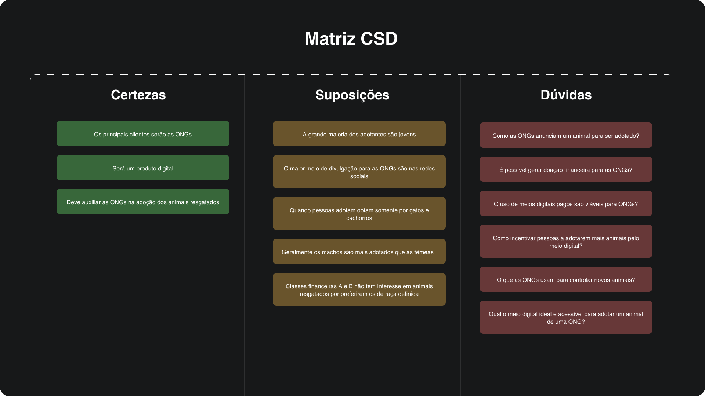As perguntas abaixo direcionaram a pesquisa (que foi realizada de forma apenas de forma Desk devido ao curto período de desenvolvimento em que fui desafiado).
- Quais as maiores necessidades das ONGs voltadas ao resgate de animais?
- O que é feito quando uma ONG não tem visibilidade?
- Quais os meios digitais existentes que envolvem adoção por ONGs ou Clínicas Veterinárias?
- Quais classes sociais adotam animais com mais frequência?
- Quais as doenças que mais atingem os animais resgatados?
- Como são feitos os tratamentos nos animais resgatados?
Para responder as perguntas acima, foi utilizada a pesquisa desk, com o propósito de cumprir o prazo desafiado.
Técnica de Mapa Mental, utilizada com o intuito de organizar visualmente as informações pensadas sobre o contexto.
Como resultado da pesquisa, foram encontradas informações de acordo com as dúvidas levantadas. O objetivo dessa técnica é de adquirir informações na internet, livros, artigos e publicações que contenham conteúdo relevante para o projeto. Além disso é possível organizar as informações e adquirir insights importantes.
Quais as maiores necessidades das ONGS voltadas ao resgate de animais?
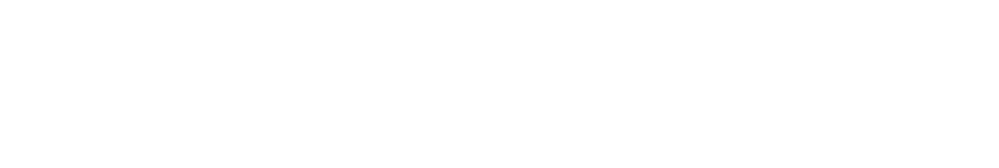Fonte:
https://love.doghero.com.br/dicas/ong-de-animais/
https://www.suipa.org.br/index.asp?pg=comoajudar.asp
https://vereadorafernandamoreno.com.br/como-posso-ajudar-ongs-e-protetores-de-animais/
Quais os meios digitais existentes que envolvem adoção por ONGs ou Clínicas Veterinárias?
Há uma variedade de formulários de adoção. Porém, como protocolo são pedidos os documentos de identificação, comprovantes de moradia e taxas de adoção.
Exemplo de portais atuais com adoção online
Quais as doenças que mais atingem os animais resgatados?
Nascimento e Marisco, 2018
O que é feito quando uma ONG não tem visibilidade
Dentre as opções para se obter visibilidade, as menos burocráticas (como internet) tem altas chances de engajamento. Além disso, ter definido uma estratégia de marketing e ter conhecimento de ferramentas para impulsionar em redes sociais são as recomendações comumente encontradas.
Fonte:
https://www.portaldoimpacto.com/por-que-a-sua-ong-deveria-saber-mais-sobre-marketing-de-causa
Quais classes sociais adotam animais com mais frequência?
De acordo com a pesquisa realizada pelo PoderData (2020) com 2.500 participantes, foi possível encontrar os seguintes dados:
Quem mais defende a adoção e é contra a compra de pets:
Mulheres (65%);
De 16 à 24 anos (70%);
Com ensino fundamental completo (62%);
Sem renda fixa (68%);
Quem mais acha que as pessoas não deveriam parar de comprar cães e gatos:
Homens (25%);
De 16 à 24 anos (25%);
Com ensino superior completo (33%);
Recebem de 5 até 10 salários mínimos (49%);
Fonte:
https://www.poder360.com.br/brasil/59-dos-brasileiros-dizem-ser-melhor-adotar-pets-abandonados-do-que-comprar/
Como é feito o tratamento dos animais resgatados?
Artigo Petz, 2019
Insights
É importante informar aos possíveis adotantes sobre as doenças que os animais de rua podem transmitir aos humanos, a fim de conscientizá-los sobre a necessidade de cuidados preventivos e higiene.
O processo de adoção geralmente envolve documentação e taxa de adoção, o que pode ser um empecilho para algumas pessoas. É preciso simplificar esse processo para facilitar a adoção.
Recursos financeiros, veterinários, abrigos, alimentação, voluntários, divulgação e remédios são os principais recursos que as ongs precisam para resgatar e cuidar dos animais.
A internet é uma das formas mais efetivas para as ongs obterem visibilidade e engajamento. É importante ter uma estratégia de marketing e conhecimento em ferramentas para impulsionar as redes sociais.
Mulheres jovens, com ensino fundamental completo e sem renda fixa são o grupo que mais defende a adoção e é contra a compra de animais de estimação.
É importante orientar os adotantes sobre o estado de saúde dos animais resgatados e a necessidade de uma avaliação médica antes do banho e tosa.
Taxonomia das Informações
Conscientização sobre doenças transmitidas por animais de rua
Simplificação do processo de adoção
Recursos necessários para as ONGs
Estratégia de marketing e visibilidade
Perfil dos defensores da adoção e da compra de animais
Orientação sobre estado de saúde dos animais resgatados e cuidados prévios ao banho e tosa.
Alinhando os resultados da pesquisa e os objetivos definidos no início do projeto, foi possível criar requisitos que servem de base para avaliar as ideias criadas e como cada uma atende esses requisitos. Abaixo estão listadas algumas das ideias geradas com a técnica Brainstorming.
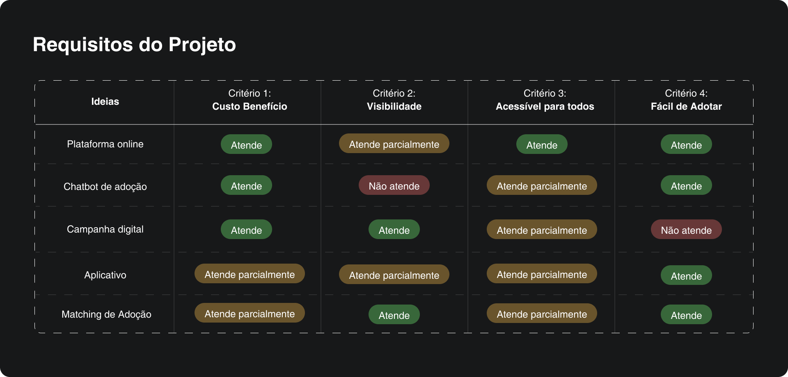Detalhamento da ideia escolhida
Será um serviço de plataforma online para ONGs anunciarem seus animais onde os usuários poderão escolher a partir de um banco de animais.
Haverá dois tipos de usuários que acessam a plataforma, a ONG e o Adotante. Deve ser abordado a etapa de cadastro da ONG, anúncio dos animais e a etapa do adotante ao adotar.
Na ferramenta será listado os recursos utilizados para auxiliar na adoção e as evidências que comprovem que as ações ocorreram.
Service Blueprint
Tem como objetivo entender e visualizar toda a experiência do usuário em relação à um produto ou serviço específico. Por ser uma ferramenta que pode ser utilizada em equipe, também funciona como um alinhamento para todos os envolvidos, onde é possível encontrar problemas ou atribuir oportunidades ao projeto.
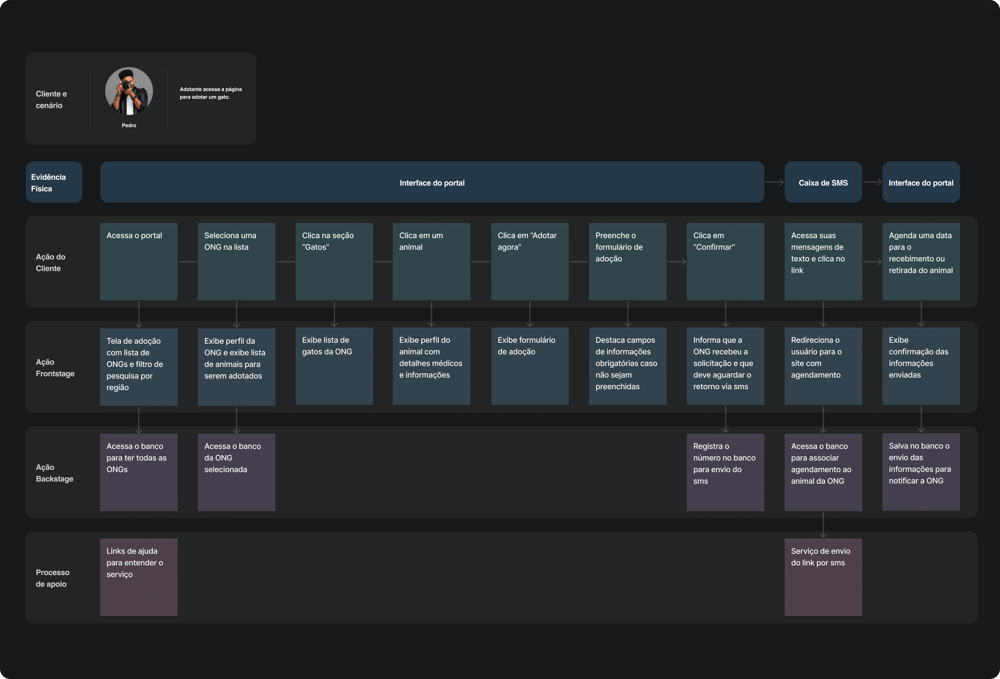Baseado na persona Adotante
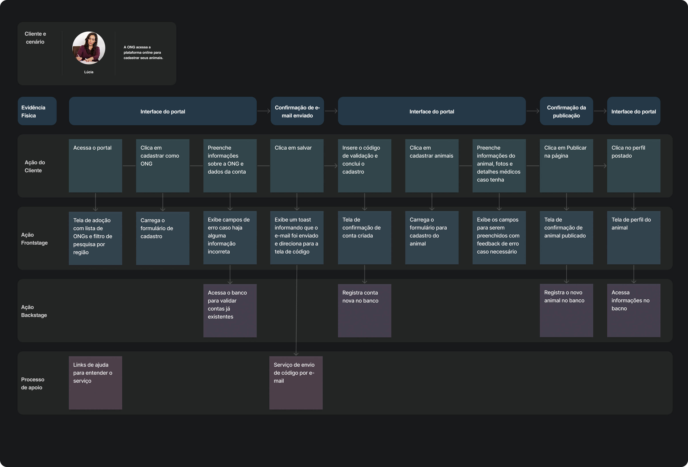Baseado na persona Representante da ONG
User Stories
Como gerente da ONG
Quero acessar a plataforma para realizar o cadastro
Para que
Eu possa ter uma conta e utilizar seus recursos
Como gerente da ONG
Quero cadastrar um animal com informações básicas
Para que
Eu possa adicionar animais que precisam de resgate no meu perfil
Como adotante
Quero acessar a plataforma para adotar um animal
Para que
Quero acessar a plataforma para realizar o cadastro
Como adotante
Quero poder selecionar um perfil de gato para adotar em uma ONG
Para que
Eu possa iniciar o processo de adoção
Sitemap
Antes de seguir para o Wireframe, criei um sitemap simples para ilustrar a ideia de como será a plataforma.
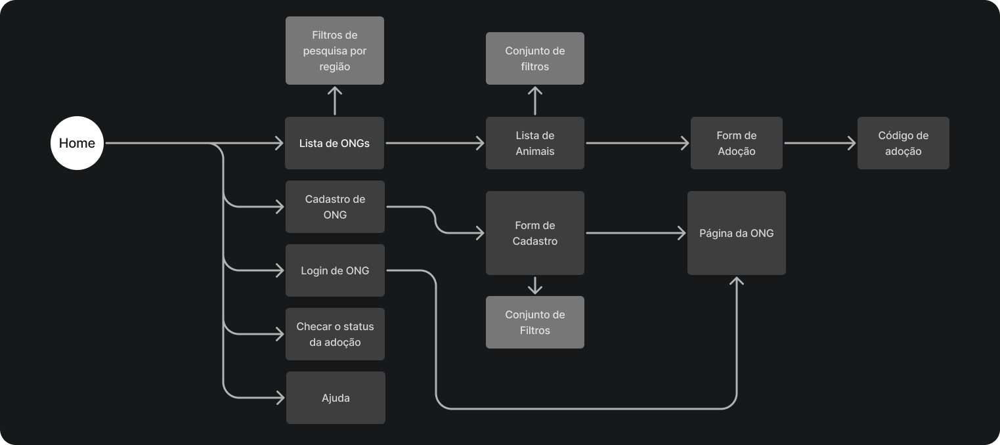Fluxos
Cadastrar uma ONG na plataforma; Cadastrar novo animal;
Adotante acessa a plataforma; Adotante adota um animal na plataforma;
Checar status da adoção;
Abaixo alguns fluxos construídos para elaboração dos wireframes.
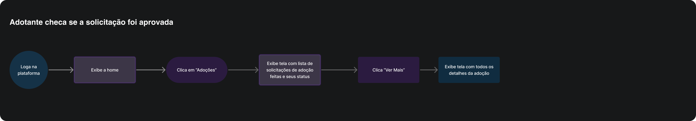 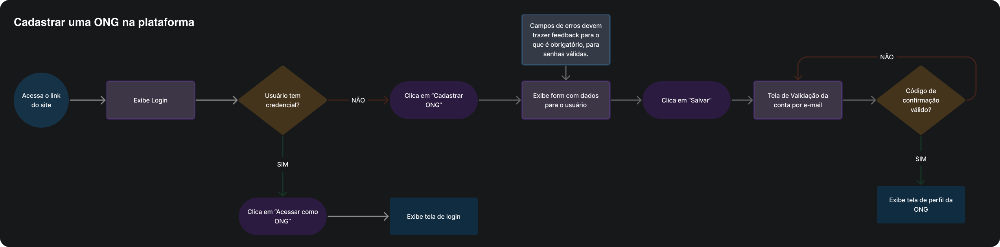 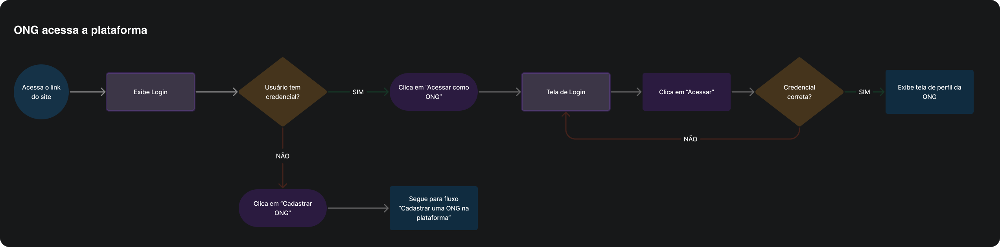 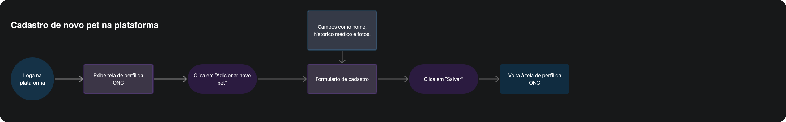 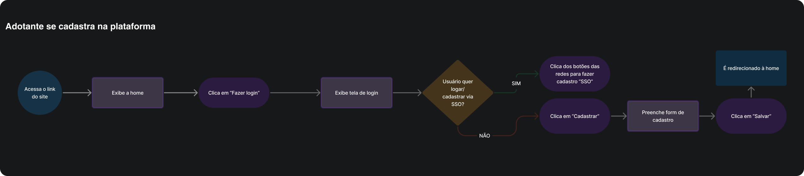 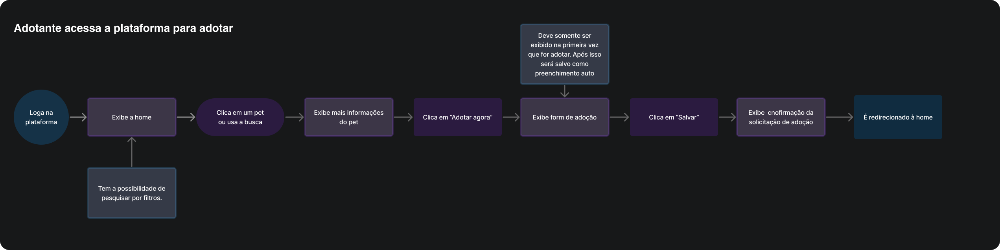Wireframes
O conceito mobile first foi aplicado, onde é possível ter uma visualização do site pensada em mobile antes de considerar um tamanho maior. Isso ajuda na organização dos elementos e adaptação.
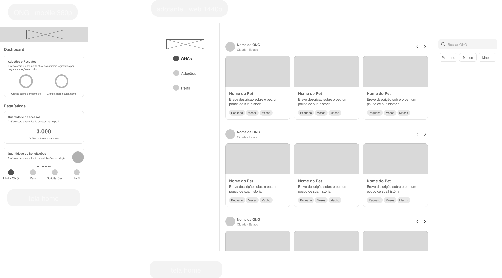 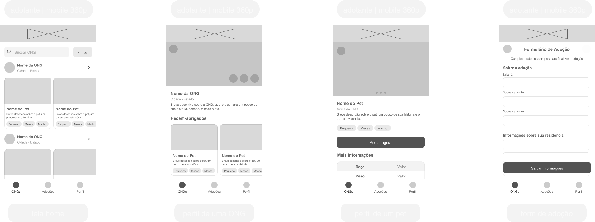 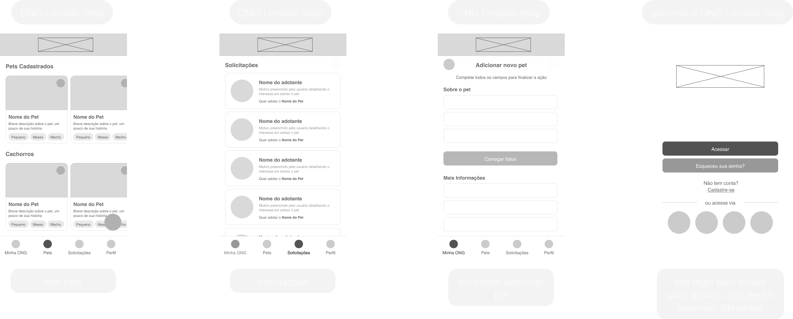Painel Semântico
Visando os conceitos pensados na técnica de mapa mental, a construção de um painel semântico para a interface foi aplicada a fim de nortear como os elementos visuais e cores devem se comportar com o projeto. As palavras-chave usadas para o conceito são: amor, leveza e conforto.
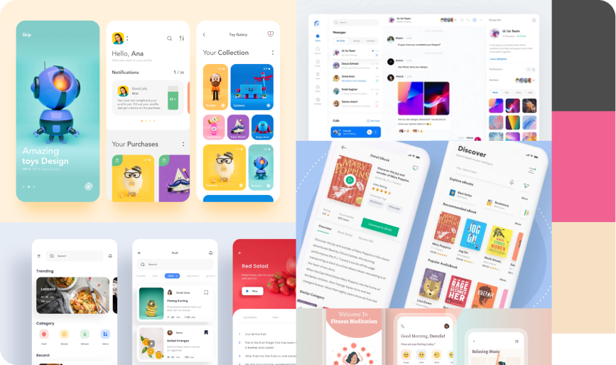Como cores estarão sendo utilizados os tons de rosa, que reforça o conceito de amor e conforto. A leveza na interface deixa a navegação mais fluida, pois permite que somente elementos de ação ajudem o usuário a tomar decisões, onde o uso do branco e cinza auxilia nessa navegação. Os elementos visuais e componentes também deve ter suas arestas arredondadas, tirando o aspecto “formal” da interface e auxiliando na interação do conteúdo de dentro desses componentes.
Branding
De acordo com os elementos definidos anteriormente, foi elaborada uma marca que se aplicasse ao contexto, veja abaixo mais detalhes:
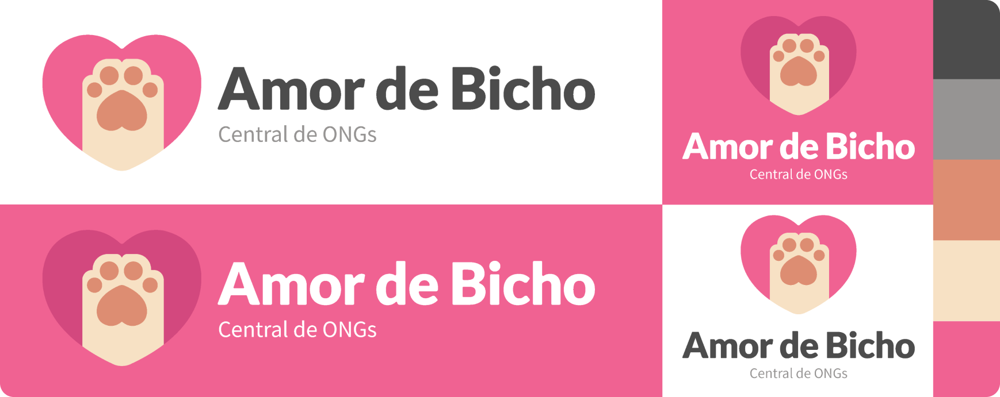Styleguide
Foi criado um styleguide com o objetivo de padronizar o sistema, além de que, na etapa de handoff do projeto será de grande proveito do desenvolvedor front-end pois ele já conseguirá criar uma biblioteca de estilos padronizada.
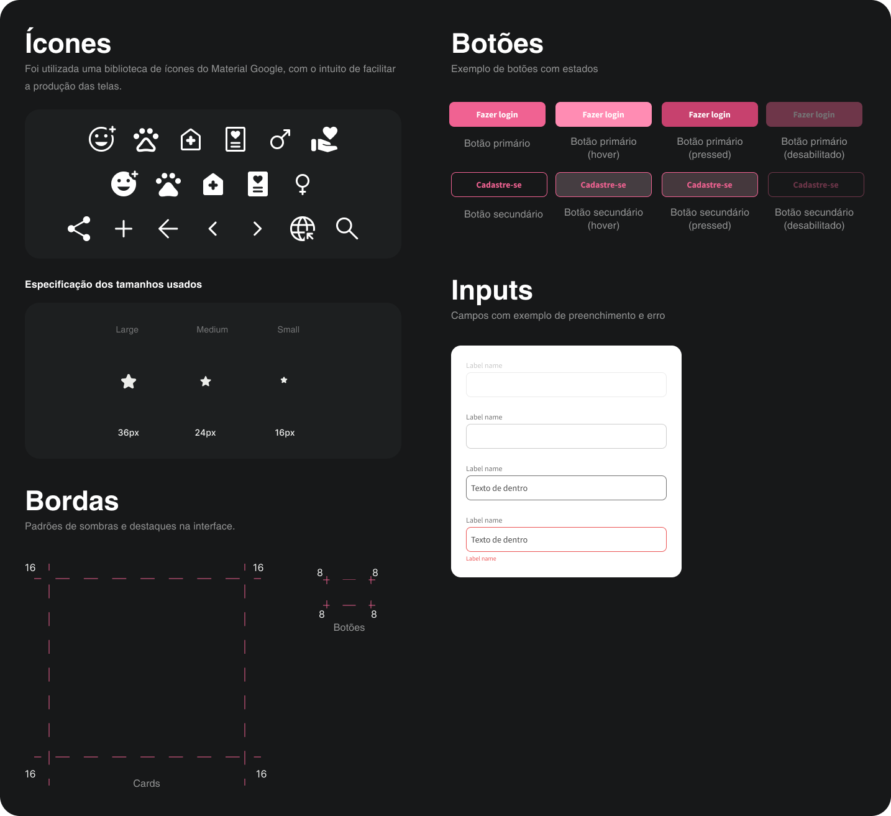 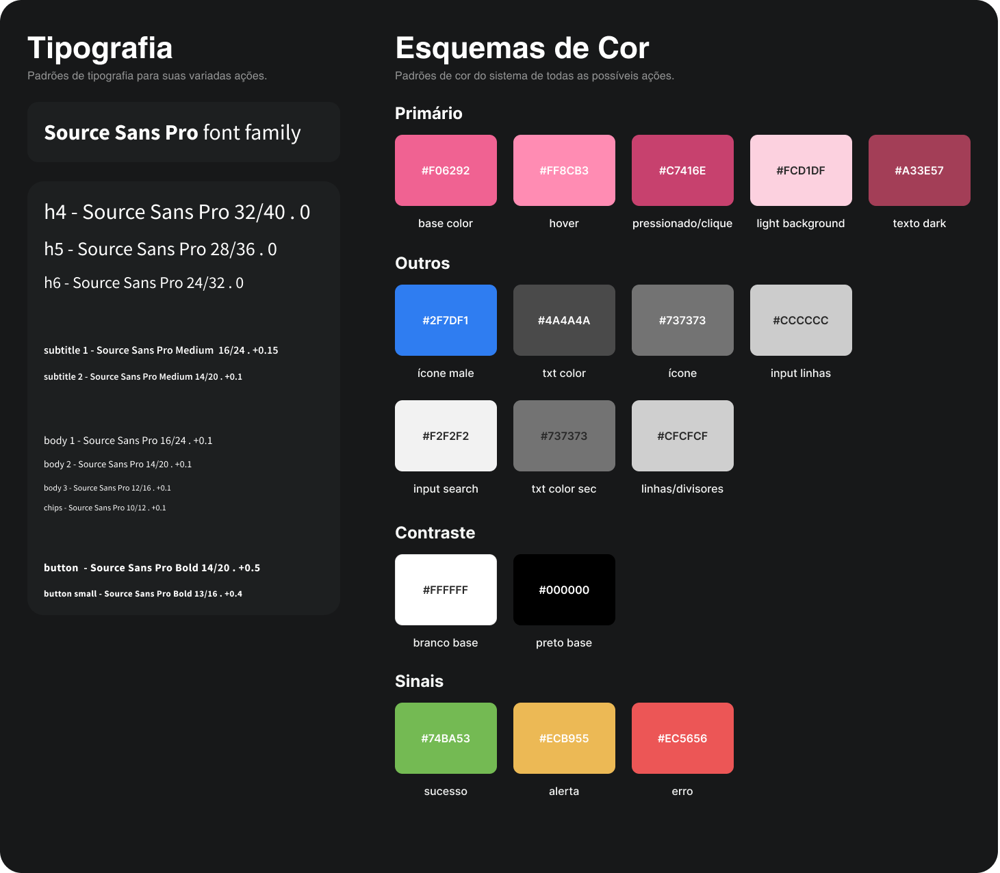Adotante acessa a plataforma para adotar um pet
Caso queira acessar o protótipo navegável destas tela, clique aqui.
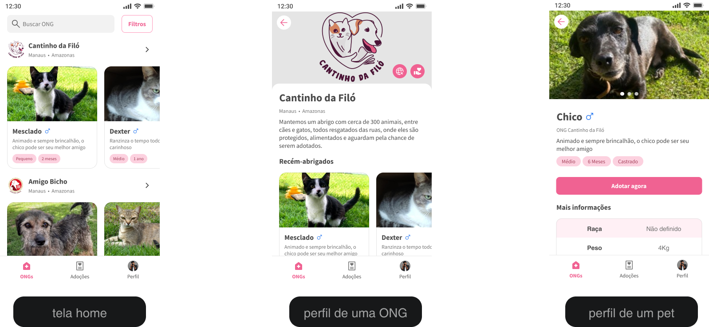 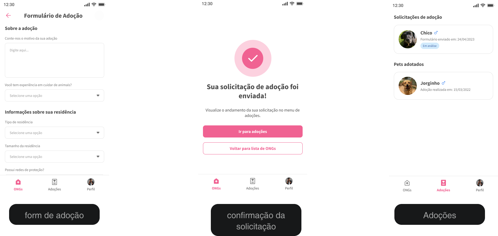ONG cadastra novo animal na sua página
Caso queira acessar o protótipo navegável destas tela, clique aqui.
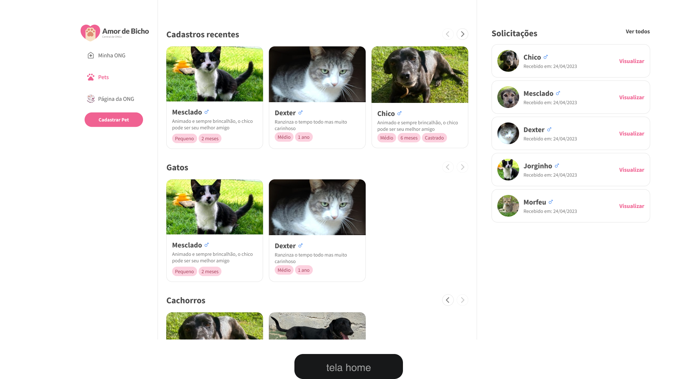Visando a entrega a curto prazo, foi validado somente para a parsona “Adotante”, onde fica livre para um desenvolvimento futuro uma aplicação do teste o público “ONGs”.
Form e Interação com protótipo
O teste foi realizado através de um protótipo interativo no figma, onde o usuário realizou algumas atividades e registrou seu desempenho respondendo ao form.
Exemplo do form utilizado
Resultados
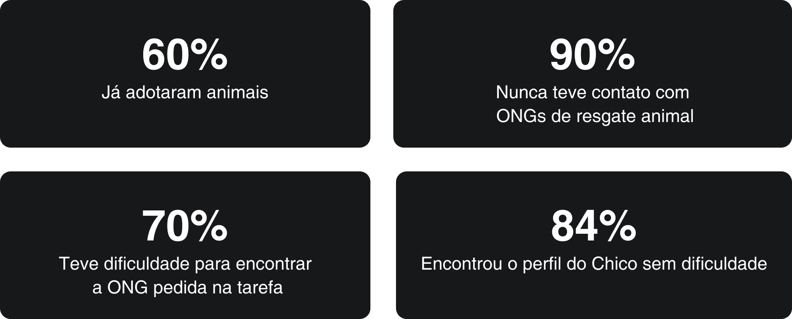Tive a oportunidade de fazer a pesquisa presencialmente com um indivíduo. Através dele foi possível notar pontos mais relevantes ao acompanha-lo.
O teste foi enviesado ao colocar “Cantinho da Filó” como primeiro item da lista;
O campo do formulário mostrou preocupação para o usuário pois ela ultrapassava o campo de visão da tela, dando a entender que o form seria maior do que realmente é;
A tela de feedback de adoção poderia ser mais interativa;
Indicativo de seções
Foi adicionado um componente de seção, o intuito dele é diminuir a quantidade de conteúdo exibida para o usuário, além disso possibilita uma melhor visualização sobre quais informações estão sendo preenchidas por conta da segmentação. Veja abaixo o antes e depois:
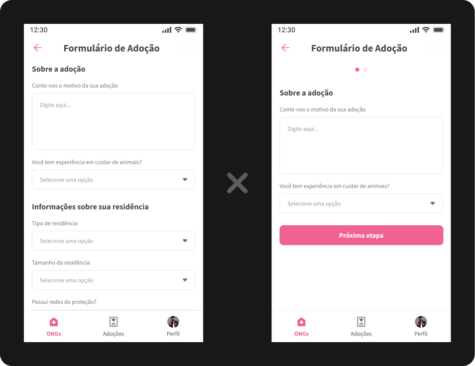Feedback de solicitação
Trazendo mais personalidade para a tela de feedback agora o usuário visualiza o pet que está adotando e torna o processo com apego emocional. Veja abaixo o antes e depois:
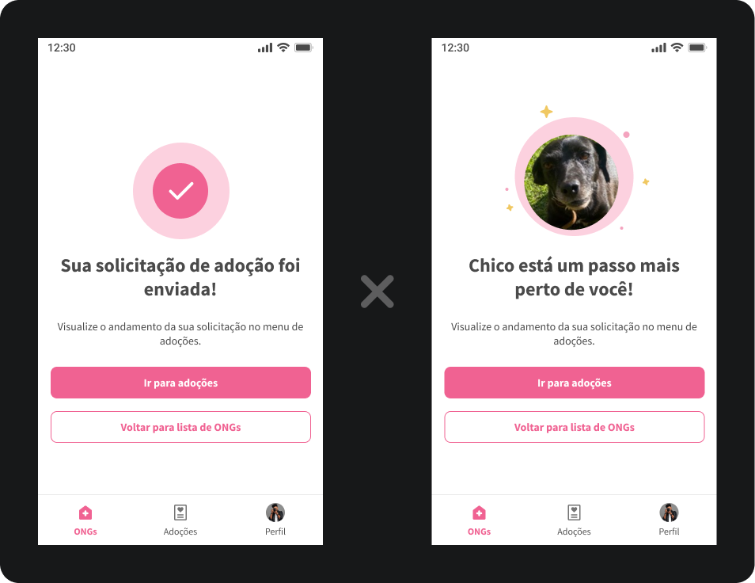Veja também outros projetos

Uni
Projeto Universitário
Um dispositivo digital que auxilia adolescentes com TDM (Transtorno Depressivo Maior), aliado ao conceito do design emocional, busca estimular o usuário na prática de atividades cognitivas e interações sociais.

Super Monitoria
Projeto Voluntário
Um sistema de monitoria para alunos, monitores, coordenadores e professores que tem como objetivo oferecer uma plataforma online para facilitar a comunicação e o acompanhamento das atividades de monitoria em uma universidade.